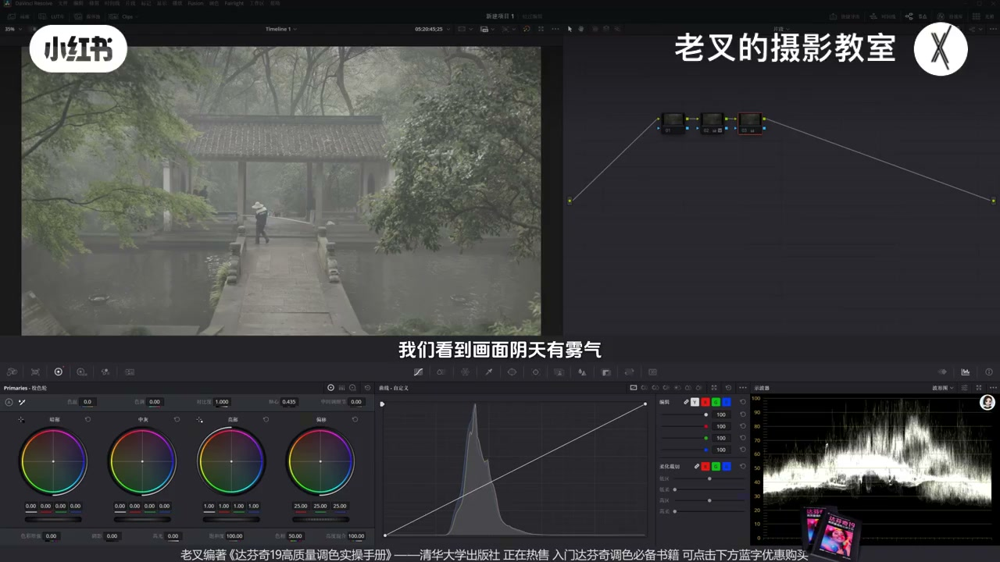
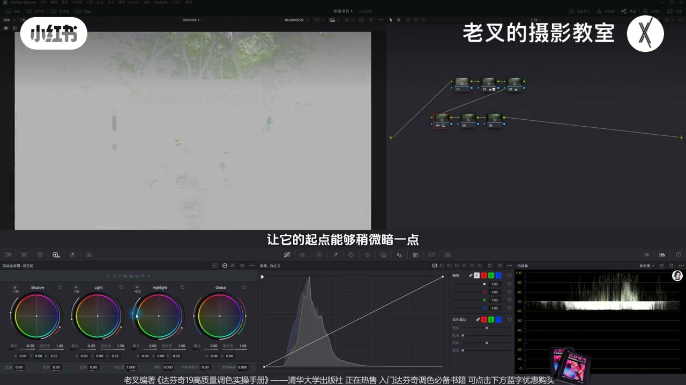
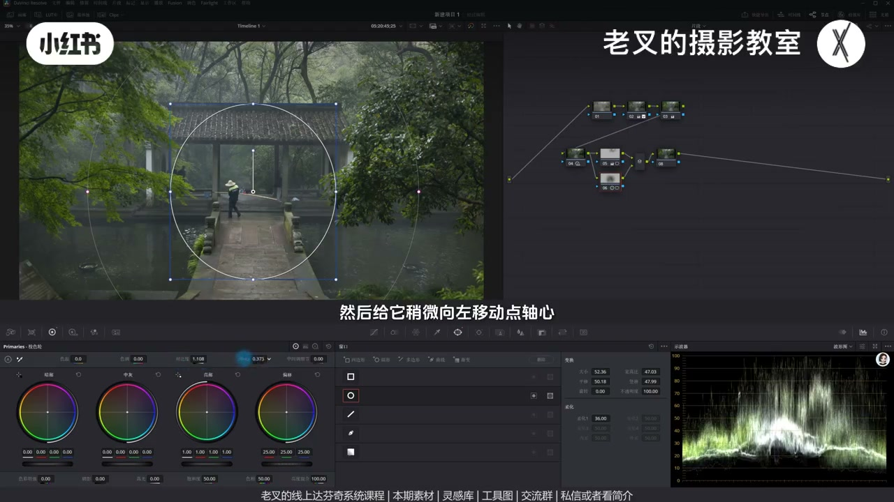
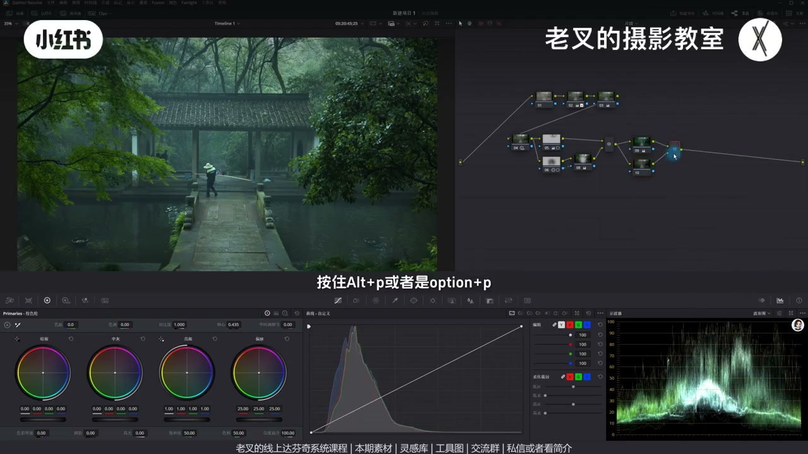
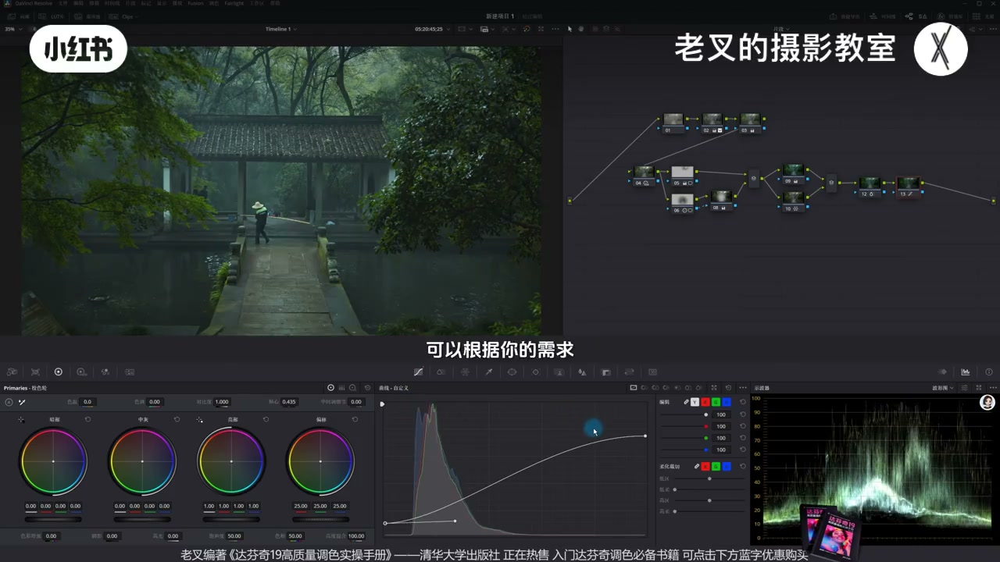

内容要点
朋友觉得园林雾景杂乱不舒服：根因是处处太亮、没有主次。老叉还原时故意偏暗保氛围，用 HDR 降 Shadow/Light、抬 Highlight 拉开雾天光感，再遮罩压天空、中间提对比、外部压暗重塑分区。颜色整体走冷青绿，并行节点保石板与人物暖色，六相切片加密度降饱和求耐看，最后柔和对比度收影调。核心：阴天漫反射必须有取舍。
知识结构
处处太亮＝无主次；阴天有雾，还原别太亮才有氛围。
降 Shadow/Light，调 Highlight 范围并多抬，拉开雾天物体表面光感，避免高光发灰。
压抢戏天空；中间大柔化遮罩加对比提主体；外部压暗四周；阴天无硬光源方向。
降色温色调走青绿；并行节点把石板/帽/杆暖色保护回来；六相加密度降饱和去艳。
可编辑样条线重分配影调；与还原对比；思路＝取舍与强化弱化。
园林雾景「杂」多半是曝光无主次。先暗一点还原，用 HDR 保住潮湿表面光感，再压天空、提中景、压四周；颜色走冷但并行保暖，降饱和求阴天逻辑。调色前先想清什么该要、该弃。
00:00-00:28杂乱＝处处太亮；还原偏暗保氛围
朋友觉得素材杂乱、自己调的不舒服；老叉给了一版对方认可的偏氛围结果。画面阴天有雾，还原一定不要太亮——亮就不对，暗一点才有氛围，曲线力度示意到舒适即可。
杂乱从朋友结果能看出：什么都太亮、谁都清楚＝没有主次。

00:28-01:33HDR：拉开雾天高光层次，别让光感发灰
第二排首节点用 HDR：先降 Shadow，再降一点 Light，微调 Highlight 范围起点略暗，再较多抬 Highlight 曝光。有雾意味着物体表面可能潮、有露珠，光角合适时会有光感（如桥面）；不抬 Highlight，高光易发灰。
配合降 Light，高光层次拉开，整体氛围开始出来。

01:33-02:59分区：压天空、提中景、外部压暗
主体可以是中间人物，也可以是桥与亭——中景距离是主体；两侧树与水营造氛围；上方天空最抢戏。给右上天空画遮罩，用一级轮亮部略压曝光。Option/Alt+P 建并行，给中间大柔化遮罩略加对比、轴向左让它略亮。
Option/Alt+O 建外部节点压四周：降阴影滑块，同时略抬高光滑块——要压暗就不能只压。三节点后主次与质感、氛围都出来。阴天是漫反射，没有晴天那种明确光源与硬光，必须有取舍。素材已传平台可自取。

02:59-04:29走冷青绿，并行保暖，六相降艳
颜色整体走冷是必然，但朋友结果太艳、层次乱——阴天不该那么艳。节点降色温并略降色调走青绿；石板本偏暖、帽与杆会发绿，不舒服。并行节点把暖色保护回来，略加饱和、微调色相。
仍略艳时用色轮六相切片：黄/绿密度略增，青蓝酌量，再略降饱和——阴天饱和不可能那么强。按最终观感加减，求更耐看。

04:29-05:39柔和对比度收束：取舍是调色前思考
传统艺能：柔和对比度，打开可编辑样条线，高光端下降、高光波谷上提，暗部上提、暗部波谷下拽，按需重分配影调，中间反差少牺牲，画面更柔和无极亮极暗。
与还原对比，氛围明显。太绿可回节点回调色调。总结：一定要有取舍——什么该要、不该要，强化还是弱化，是调色前最重要的思考。

完整转录（226段）
以下文本由 Whisper medium 模型自动转录，可能存在少量识别误差，已尽可能修正。
近两天我有朋友问我
他感觉这个素材非常的杂乱
他调出来的结果从观感上来讲
感觉不是很舒服
那这是他调的
我调了一个版本
他觉得还不错
大概就是这种感觉
那这要怎么调呢
其实非常简单
我们看到画面阴天有雾气
所以我们在还原的时候
一定不要做的太亮
对吧
你亮肯定是不对的
暗一点才有氛围
所以我给他大概还原到这个程度
你看我曲线大概是这个力度
然后我们就要对画面
进行曝光的分区调整
为啥作者会觉得画面杂乱
从他调的结果就能够发现
什么都太亮了
谁都看得清楚
就代表着画面中没有主次
也就自然会觉得画面特别杂乱
所以我们建立几个节点
拉到第二排
在第二排的第一个节点中
我们可以先用HDR色轮
给全局引调做到位
我先是降低了
Shadow色轮的曝光
然后再降低点Light色轮的曝光
稍微调整一下Highlight色轮的范围
让它的起点能够稍微暗一点
然后再提高点Highlight色轮的曝光
Highlight色轮这个时候
要稍微多提一点
为啥呢
因为你画面中有雾的话
就代表着物体表面
会有点潮汐
会有点露珠之类的
对吧
如果说画面中有光
并且折射角度合适
你自然而然就会看到
物体表面会有一定的光感
对吧
像是个桥
如果说我们不提高Highlight色轮的曝光
的话我们看到它的高光会发灰
所以我们要通过提高Highlight色轮
并且调整到合适的一个范围之后
再提高它的曝光
让它的光感能够保留
再加上我们降低Light色轮
所以它的这个高光层次
它会拉开
效果还是挺好的
我们看到整体的氛围
也能够稍微出来一些
接下来我们就开始做曝光的分区调整
主体是谁
可以是中间这个人
也可以这个桥和亭子
也就是中间这个距离
就是我们的主体
那谁又能营造氛围呢
那自然就是两侧的树
也有可能会带上这里的水
那画面中有谁特别抢戏
我觉得是上方的天空
所以我在后面的这个节点中
先给右上角这个天空画一个遮罩
然后给它降低一点高光
我这里用的是一级胶色轮的亮部色轮
给它稍微压低一点曝光
然后再按住Alt加P或者是Option加P
建立一个变形节点
给中间区域画一个相对大柔化的遮罩
大概是这个范围
然后通过增加一点对比度
不用太多
然后给它稍微向左移动点轴
新任它能够亮一点点
不要太暗
大概到这个程度
我们力度没有加太大
为啥
因为我们要在Alt加O或者是Option加O
建立一个外部节点
也就是让这四周其他的地方
稍微压暗一些
我们可以降低一点音韵滑快
还是那句话
要压暗就不能只压暗
你还得提亮
所以我们再稍微提高一点高光滑快
大概到这个程度
我们来看到画面
这三个节点的调整
是不是能够让我们的画面整体
特别是它的主次做好了区分
整体的一个质感也出来了
氛围也出来了
就像我和那位朋友说的
阴天是慢反射光
它不会像晴天那样
有非常明确的光源方向
而且它的光也不可能是映光
对于这样的场景
我们调色就一定要有取舍
作者也同意把素材分享给大家练手
所以我也传到了线上分享平台
大家可以私信或是看我剪辑来加入
免费自取
还要答复现在线上系统课程
和线下调色训练营
接下来我们就可以动颜色
这种画面
颜色整体走冷掉是必然的
这位朋友也是这样认为的
但是我们再次看到它调的结果
颜色你会感觉非常的艳
这不符合逻辑
阴天怎么可能会有这么艳的颜色呢
而且它的颜色层次很乱
我们应该怎么做
首先我们在后面这个节点给它整体走冷
我这里是降了色温
也稍微降低了点色调
让它走点青绿色的感觉
大概这个效果
那这样走完了之后
整体的颜色比较对了
但是就会出现一个问题
你们看到
石板它原本其实是偏暖的
但这样做完了之后它会偏绿
包括人物的帽子和这里的这个杆
它也偏绿了
这不舒服
所以我们就必须要再来一个并行节点
Adroid的JP或者是Option的JP
建立一个并行节点
在下面这个节点中
把这些暖的颜色给它保护回来
稍微给它增加一点它的饱和度
然后也可以稍微改一改它的色相
让它能够暖回来
大概这个结果
我们放大看
这个石板的颜色变回成暖色了
对不对
包括它的帽子也变回了暖色
可是这样做完了之后
颜色虽然有了
但我还是觉得它稍微有一点艳
所以我又来了一个节点
用色轮六相切片工具
把对应的颜色
比如说黄色的密度稍微增加一点
绿色的密度也增加一点
还有青色和蓝色
青色少一点
蓝色也稍微加一点上去
再把它们的饱和度稍微降低一点下来
因为阴天饱度不可能会那么强的
青色也稍微降一点
蓝色的也可以稍微降一点
根据我们画面最终结果去考虑
你如果觉得降太多不舒服的话
你少降一点问题也不大
大概到这个程度
我觉得这样子能让颜色更加耐看
最后的最后
依旧传统艺能
我们给它上一个柔和对比度
打开曲线右上角三个点中
可编辑的烟条线
把高光这一端给它往下降
再把高光延伸出来的波感
给它往上一提
再把暗部给它往上一提
把暗部延伸出来的波感
一拽大概到这个程度
让它整体的影调可以根据你的需求
让它再次的重新分配一下
比如说你想让它暗一点
你就稍微暗一点
想让它亮一点的话
你可以把高光这里的波感
稍微多拽出来一点
这种情况也可以
让画面整体更加柔和
它没有特别亮的也不会有特别暗的
并且中间的反差不会受太多的牺牲
那这样我们就调好了
我们可以与还原后的画面做下对比
这是还原后的画面
这是我们调后的画面
你会看到这种感觉是挺棒的
对吧
当然你觉得画面太绿了
你可以回到9号节点
稍微给它色调回来一点点
你像这样子也可以
随便你
根据你自己的需求去做调整
重点是这一整体的一个思路
我们大概总结一下
你调色的时候一定要有取舍
什么该要
什么不该要
什么该强化
什么该弱化
那这就是我们最重要的调色前的思考
素材大家别忘了邻居
讲到这里
如果觉得你有帮助的话
还希望多多三连
好了
这期就到这里
886